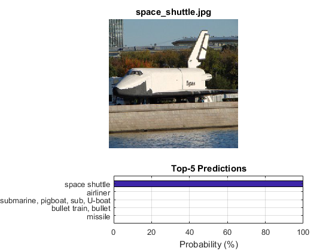

Deep Neural Network with Caffe models
Load Caffe framework models.
In this tutorial you will learn how to use DNN module for image classification by using GoogLeNet trained network from Caffe model zoo.
Sources:
Contents
BVLC GoogLeNet
First, we download GoogLeNet model files:
- deploy.prototxt and bvlc_googlenet.caffemodel
- Also we need file with names of ILSVRC2012 classes: synset_words.txt.
dirDNN = fullfile(mexopencv.root(), 'test', 'dnn', 'GoogLeNet'); modelLabels = fullfile(dirDNN, 'synset_words.txt'); modelTxt = fullfile(dirDNN, 'deploy.prototxt'); modelBin = fullfile(dirDNN, 'bvlc_googlenet.caffemodel'); % 51 MB file files = {modelLabels, modelTxt, modelBin}; urls = { 'https://cdn.rawgit.com/opencv/opencv/3.4.0/samples/data/dnn/synset_words.txt'; 'https://cdn.rawgit.com/opencv/opencv/3.4.0/samples/data/dnn/bvlc_googlenet.prototxt'; 'http://dl.caffe.berkeleyvision.org/bvlc_googlenet.caffemodel'; }; if ~isdir(dirDNN), mkdir(dirDNN); end for i=1:numel(files) if exist(files{i}, 'file') ~= 2 disp('Downloading...') urlwrite(urls{i}, files{i}); end end
Load class labels
if ~mexopencv.isOctave() fid = fopen(modelLabels, 'rt'); C = textscan(fid, '%*s %[^\n]'); fclose(fid); labels = C{1}; else %HACK: textscan is buggy and unreliable in Octave! labels = textread(modelLabels, '%s', 'Delimiter','\n'); labels = regexprep(labels, '^\w+\s*', '', 'once'); end fprintf('%d classes\n', numel(labels));
1000 classes
Create and initialize network from Caffe model
net = cv.Net('Caffe', modelTxt, modelBin); assert(~net.empty(), 'Cant load network'); if false net.setPreferableTarget('OpenCL'); end
Prepare blob from input image
Read input image (BGR channel order)
img = cv.imread(fullfile(mexopencv.root(), 'test', 'space_shuttle.jpg'), ... 'Color',true, 'FlipChannels',false);
we resize and convert the image to 4-dimensional blob (so-called batch) with 1x3x224x224 shape, because GoogLeNet accepts only 224x224 BGR-images. we also subtract the mean pixel value of the training dataset ILSVRC_2012 (B: 104.0069879317889, G: 116.66876761696767, R: 122.6789143406786)
if true blob = cv.Net.blobFromImages(img, ... 'Size',[224 224], 'Mean',[104 117 123], 'SwapRB',false); else % NOTE: blobFromImages does crop/resize to preserve aspect ratio of image blob = cv.resize(img, [224 224]); % Size blob = single(blob); % CV_32F blob = bsxfun(@minus, blob, cat(3,104,117,123)); % Mean (BGR) blob = permute(blob, [4 3 1 2]); % HWCN -> NCHW end
Set the network input
In deploy.prototxt the network input blob named as "data". Other blobs labeled as "name_of_layer.name_of_layer_output".
net.setInput(blob, 'data');Make forward pass and compute output
During the forward pass output of each network layer is computed, but in this example we need output from "prob" layer only.
tic p = net.forward('prob'); % 1x1000 vector toc
Elapsed time is 0.360979 seconds.
Gather output of "prob" layer
We determine the best class by taking the output of "prob" layer, which contain probabilities for each of 1000 ILSVRC2012 image classes, and finding the index of element with maximal value in this one. This index correspond to the class of the image.
[~,ord] = sort(p, 'descend'); % ordered by maximum probability
Show predictions
if ~mexopencv.isOctave() %HACK: TABLE not implemented in Octave t = table(labels(:), p(:), 'VariableNames',{'Label','Probability'}); t = sortrows(t, 'Probability', 'descend'); disp('Top 5 predictions'); disp(t(1:5,:)); end subplot(3,1,1:2), imshow(flip(img,3)) title('space_shuttle.jpg', 'Interpreter','none') subplot(3,1,3), barh(1:5, p(ord(1:5))*100) set(gca, 'YTickLabel',labels(ord(1:5)), 'YDir','reverse') axis([0 100 0 6]), grid on title('Top-5 Predictions'), xlabel('Probability (%)')
Top 5 predictions
Label Probability
_________________________________ ___________
'space shuttle' 0.99993
'airliner' 2.3053e-05
'submarine, pigboat, sub, U-boat' 2.1932e-05
'bullet train, bullet' 1.0001e-05
'missile' 4.962e-06
